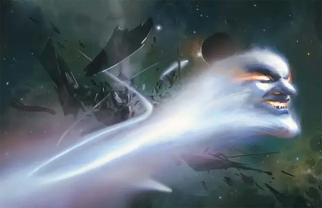

Комета-убийца
Murder Comet
Средний Элементаль, обычно нейтрально-злой

Класс Доспеха 19 (природный доспех)
Хиты 66 (7к8 + 35)
Скорость 0 футов, летая 120 футов
| мод | спас | ||
|---|---|---|---|
| СИЛ | 15 | +2 | +2 |
| ЛОВ | 15 | +2 | +2 |
| ТЕЛ | 20 | +5 | +5 |
| мод | спас | ||
|---|---|---|---|
| ИНТ | 6 | −2 | −2 |
| МДР | 10 | +0 | +0 |
| ХАР | 6 | −2 | −2 |
Иммунитет к урону огонь, яд
Иммунитет к состояниям бессознательность, истощение, окаменение, отравление, паралич, сбивание с ног
Чувства тёмное зрение 240 футов, пассивное Восприятие 10
Языки Игнан, Терран
Опасность 5 (1800 опыта)
Бонус мастерства +3
Особенности
Взрыв. Когда хиты кометы опускаются до 0, она взрывается сферой радиусом 20 футов с центром на себе. Все существа в сфере должны совершить спасбросок Ловкости Сл 16, получая 28 (8к6) урона огнём при провале, или половину этого урона при успехе.
Пролёт. Комета не провоцирует атаки, когда вылетает из досягаемости врага.
Свечение. Комета испускает яркий свет в пределах 30 футов и тусклый свет в пределах ещё 30 футов.
Осадное чудовище. Комета наносит двойной урон объектам и сооружениям.
Необычная природа. Комета не нуждается в воздухе, еде, питье и сне.
Действия
Мультиатака. Комета совершает одну атаку Размашистым ударом и одну атаку Плевком огня.
Размашистый удар. . Рукопашная атака оружием: +5 к попаданию, досягаемость 5 футов, одна цель. Попадание: 6 (1к8 + 2) дробящего урона плюс 7 (2к6) урона огнём.
Плевок огнём. . Дальнобойная атака оружием: +5 к попаданию, дистанция 60 фт., одна цель. Попадание: 13 (2к10 + 2) урона огнём.
Описание
Злые заклинатели создают комет-убийц, соединяя сущность элементалей земли и элементалей огня. Комета-убийца выглядит как кричащая каменная голова, объятая пламенем. Она оставляет за собой огненный след, когда летит через Дикий космос. Одна или в группе с другими кометами-убийцами, она выискивает корабли, экипажи и другие ничего не подозревающие цели для уничтожения.
Создатель кометы-убийцы может привязать свой дух к комете. В таком виде создатель становится вечным и бессмертным. Он может свободно носиться по Дикому космосу, не нуждаясь в воздухе, сне, пропитании. Лицо кометы-убийцы принимает облик её создателя, а её статистика изменяется следующим образом:
- Замените показатели характеристики Интеллекта, Мудрости и Харизмы кометы на показатели её создателя.
- Замените мировоззрение и языки кометы соответствующими его создателю.